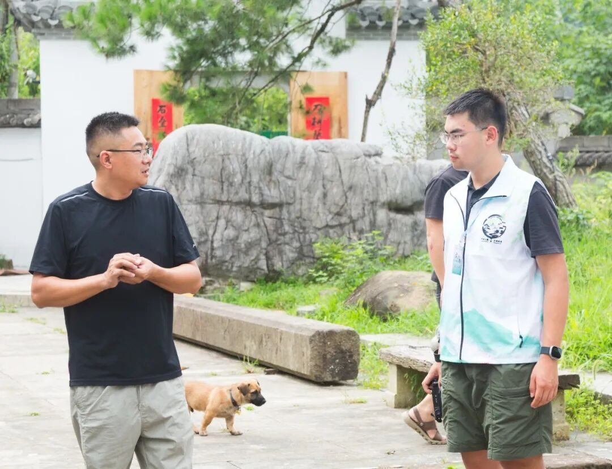
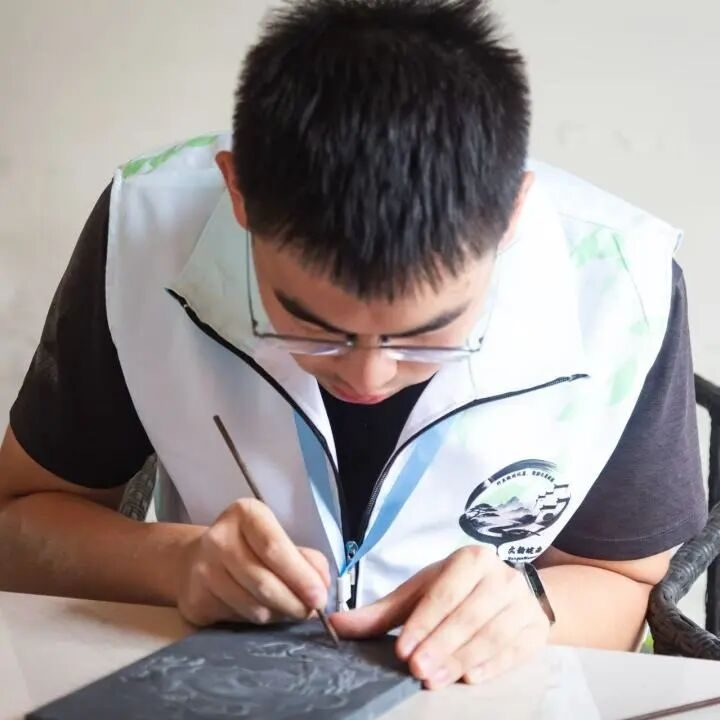
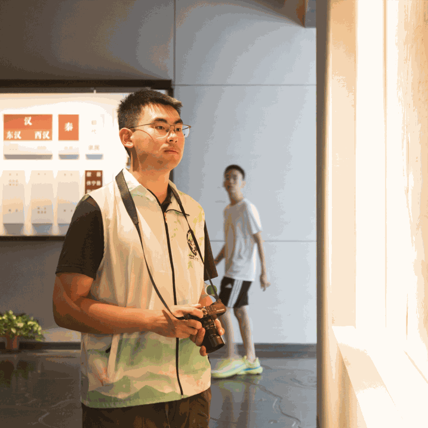
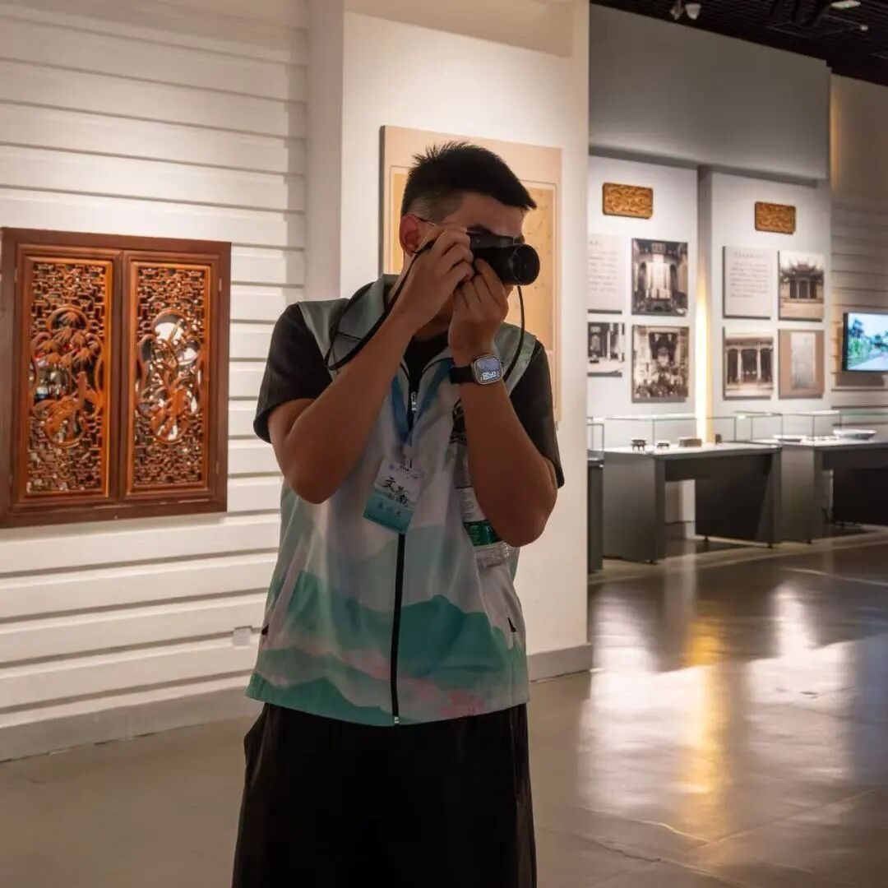
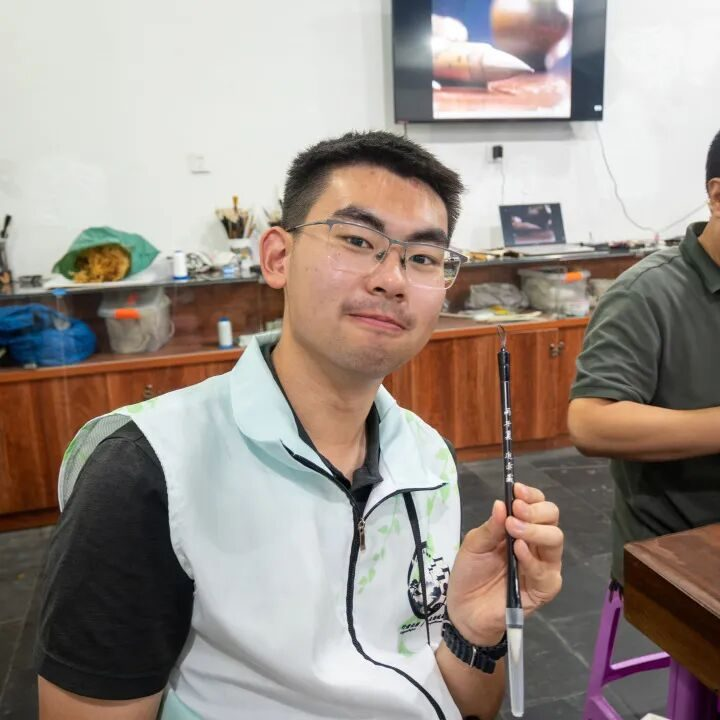
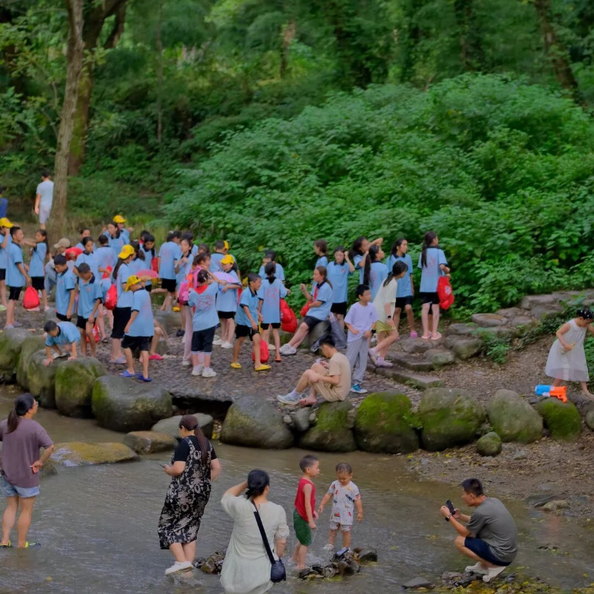
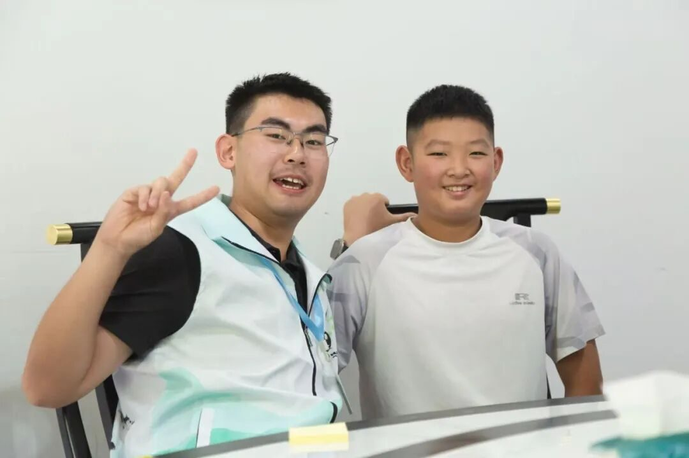

【行者无疆·文韵皖南】个人实践感悟——朱近赤



丙午夏
近赤之书
赴一场心之所向的远行
Set off on a journey after your heart.


不免回想起这五日

< 朱珠行者感悟 >
八月一日下午，当阳光掺着蝉鸣，
透过黄山北站的玻璃窗投下
时间定格在与同学们挥手告别的那一刻
突然想起
行者无疆第十八期“文韵皖南”
已经结束了

云在山间走人在画中游
Love what you love, love is freedom

TIME：2026/7/29

闯出来的路才叫出路
Chase what you chase, hope is light

TIME：2026/7/30
不是锤重，是耐心够轻
Be who you are, soul is free

TIME：2026/7/28
不求快，但要一直亮着
Keep what you cherish, faith is power

TIME：2026/7/31


纵看山水，横看人文
一句解说词很好地概括了这座城
七月二十七日清晨，出发前往实践第一站
徽州博物馆
抬头看看，天空淡蓝色的，又极高
白云透着阳光，满满地铺在穹顶上
为四周环抱着古城的群山打上柔光
这样的山水风景
于今时今日来看无疑十分美丽
Jinchi‑Bound Pages
相机是第三只眼
XIANGJISHIDISANZHIYAN
请来看ENFP朱珠敲鼓
但放在几百年前，可以想像
这样的地理条件
为古徽州百姓生活与社会经济发展
带来多少阻碍！
Yet centuries ago, such terrainmust
have brought great obstaclesto the life and economy
of ancient Huizhou.
2026/7/28
朱珠手册>>
取景框装晚霞 车筐塞文献
浪漫和数据 我全都要
Sunset in viewfinder,Papers in basket.I chase both romance and data.

我多想回到那个夏天~
“等这位学哥忙完”
而徽州人是不会安于现状的：
正是在这样的环境中，古人们以儒家文化的修养与越文化该闯敢拼的韧劲，勇于探索，渐渐形成“徽商”这一群体，极大的改变了这一方古城的经济与社会面貌。在数百年后的今天，当行者们在博物馆展柜前驻足停留的时候，仍能感受到那鼓舞人心的力量。
仲大师扫街神图哈哈哈哈（此扫街非彼扫街）
朱珠手册>>
宿舍空得能打乒乓球，但实验室的灯比家里客厅还亮。暑假嘛，总得找点事把自己“焊”在工位上。
Our dorm lies empty, roomy enough for ping‑pong.The lab lights, however, shine brighter than my living‑room lamp back home.For summer break, I’ve got work to keep me anchored at my desk.
严肃和大师对视中
反（爱）YL阵线联盟
以徽砚为例吧：
穿过黄山市郊弯转的小路，便是方韶老师的工作室，方老师五十余岁，黑发白须，气质飘然，平和地微笑着。会客厅的正堂古色古香，方老师坐在圈椅上，为我们细细讲述徽派石雕的特点与历史。

我和大师家小孩的合影嘿嘿
徽派石雕讲究精巧，器物表现上趋于可爱、灵动；这与北方地区追求威武严肃的石雕风格形成极鲜明的对比。院内墙上镶嵌的浮雕栩栩如生，讲述着徽州人的生活故事。方老师走走停停，不时驻足，言谈举止间令人感受到一种静谧的力量：平静，坚定。当生命价值被浓缩进对手艺与艺术的追求，无需经院哲学式的思考而回归本真，极好。随后几日我们依次采访了杨文笔庄，老胡开文墨厂，红星宣纸厂等地，进一步了解了徽州文化。
Jinchi‑Bound Pages
自行车是第四条腿
ZIXINGCHESHIDISITIAOTUI
八月一日，采访了解瞻淇鱼灯
当闫磊队长和老师一同拿起竹竿
鱼灯在空无一人的戏台上跃起
大家静静地站在院中看着
队服上洒满盛夏七月的耀眼阳光
行者的身影与舞鱼灯的鼓声锣声交杂于一起
构成了文韵皖南的最后一点回忆
2026/8/1
以上，记十八期行者无疆
来源 | 行者无疆实践团
图片 | 行者无疆实践团
文字 | 朱近赤
编辑 | 袁 婵
审核 | 闫 磊
责编 | 邹靓靓 周 亮